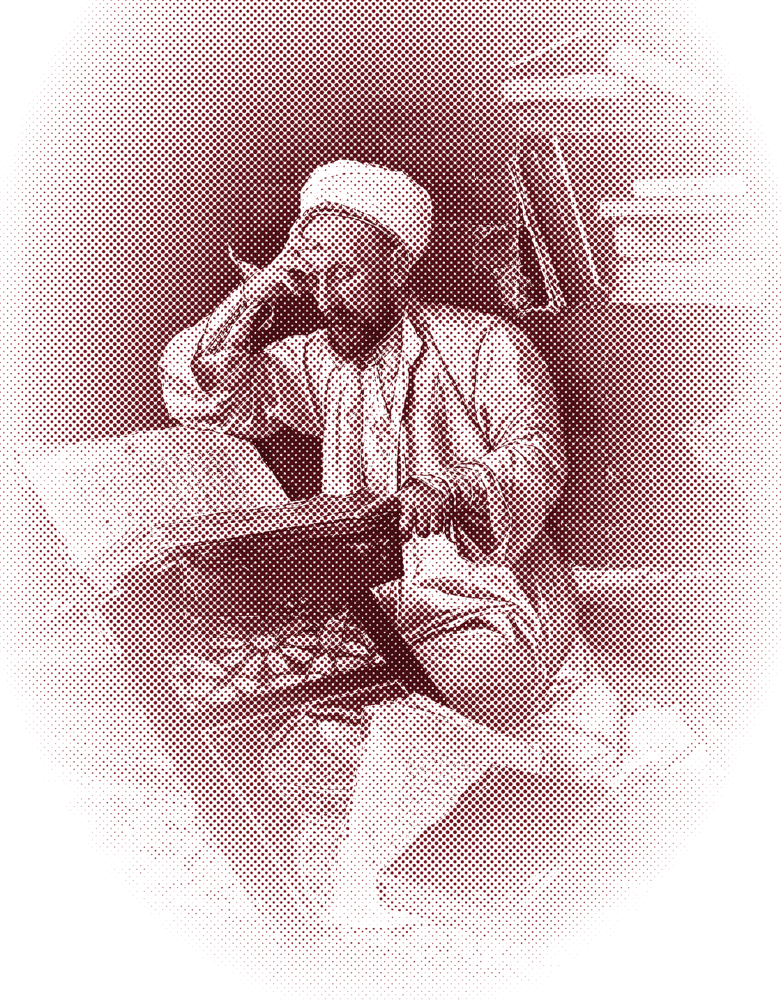
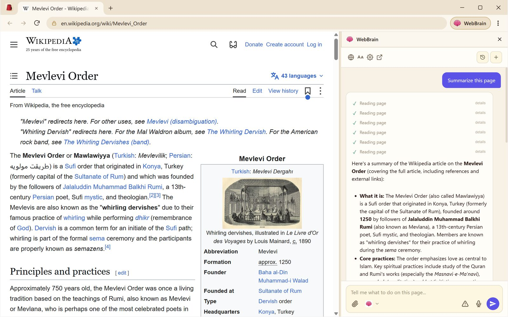

#1 تصفّح
Chromium، بعلامات تبويب
علامات تبويب تسحبها وتعيد فتحها، وشريط عنوان يبحث أيضًا، وتنزيلات، وبحث في الصفحة، وتكبير، وأدوات المطوّر، والاختصارات التي تعرفها يداك.
Murshid متصفح مبني على Chromium وفي داخله WebBrain. اسأل عن الصفحة التي أمامك، أو كلّفه بمهمة. يقرأ وينقر ويكتب في علامات تبويبك أنت وأنت تراقب، ويعمل باشتراكات الذكاء الاصطناعي التي تدفع ثمنها أصلًا.
git clone --depth 1 --filter=blob:none --sparse -b murshid https://github.com/esokullu/webbrain.git
cd webbrain && git sparse-checkout set murshid src/chrome
cd murshid && npm install && npm startآخر إيداع فقط، ومجلد murshid/ وإضافة WebBrain التي يحمّلها فقط: بلا سجلّ تاريخ، ولا ملفات zip للإصدارات، ولا مقاطع فيديو، ولا ملفات اختبار.


في جعبة المرشد
كل ما تنتظره من Chrome، مع وكيل WebBrain منسوجًا في داخله، لا مُلصقًا عليه.
#1 تصفّح
علامات تبويب تسحبها وتعيد فتحها، وشريط عنوان يبحث أيضًا، وتنزيلات، وبحث في الصفحة، وتكبير، وأدوات المطوّر، والاختصارات التي تعرفها يداك.
#2 اسأل ونفّذ
اسأل عن أي صفحة أو ملف PDF أو نص تحدّده. أو أخبره بما تريد إنجازه، فيملأ النماذج ويمضي في الخطوات نقرةً نقرة ويقارن علامات التبويب نيابةً عنك.
#3 علبة النظام
يقيم WebBrain Companion في علبة النظام، ويقدّم اشتراكاتك في Claude وChatGPT وGemini وGrok وKimi وMuse وDevin إلى WebBrain على 127.0.0.1. بلا مفاتيح API.
#4 تبويب جديد
كل علامة تبويب جديدة تُفتح على صفحة WebBrain: اكتب سؤالًا أو مهمة أو بحثًا، فيذهب مباشرةً إلى اللوحة. مثبّتة مسبقًا ومفعّلة.
#5 محلي
يستطيع Companion تشغيل Bonsai 2 27B من PrismML ونموذج القرار d1 من WebBrain محليًا، بحجم يناسب بطاقة الرسوميات لديك، مع التحقق منهما بـ SHA-256.
#6 مفتوح
برخصة GPL-3.0، ويُبنى علنًا مع WebBrain. لا يرسل المتصفح أي بيانات قياس عن بُعد. اقرأ كل سطر يلمس صفحاتك.
الطريق
اسأل عن الصفحة التي أمامك. يقرؤها WebBrain — النصوص والجداول والنماذج وملفات PDF، بل وما يظهر على الشاشة فقط — ويجيب إلى جانبها.
في كل ما يتطلّب نقرًا أو كتابة، تعرض ميزة «Plan before Act» (الخطة قبل التنفيذ) الخطوات أولًا. وافق عليها، أو عدّلها، أو أوقفها.
ثم يعمل في علامات تبويبك الحقيقية، بتسجيلات دخولك الحقيقية. كل خطوة ظاهرة أمامك، ويمكنك أن تمسك المقود في أي لحظة.
في علبة النظام
يشغّل Murshid تطبيق WebBrain Companion حين يبدأ. سجّل الدخول مرة واحدة في تطبيق علبة النظام الصغير، فتصبح اشتراكاتك نقطة اتصال محلية واحدة لا يصل إليها إلا هذا الحاسوب، مع نظرة سريعة على ما تبقّى من كل اشتراك.
http://127.0.0.1:8327/v1احصل على Murshid
Murshid في مرحلة المعاينة التطويرية. لأنظمة Windows وmacOS وLinux برامج تثبيت تتضمّن WebBrain Companion. ويأتي WebBrain وصفحة علامة التبويب الجديدة الخاصة به مثبّتَين مسبقًا.
الإصداران 10 و11، x64. أما Arm64 فيعمل من المصدر.
0.1.0 · x64 · 150 ميغابايتلم يُوقَّع رقميًا بعد، لذا قد يوقفه Windows SmartScreen: اختر مزيد من المعلومات، ثم تشغيل على أي حال.
الإصدار 12 Monterey وما بعده، Apple Silicon وIntel.
0.1.0 · Apple Silicon وIntel · 294 ميغابايتلم تصادق عليه Apple بعد (notarization): انقر بزر الفأرة الأيمن على التطبيق واختر فتح، أو استخدم إعدادات النظام > الخصوصية والأمن > فتح على أي حال.
x64. أما Arm64 فيعمل من المصدر.
0.1.0 · x64 · 171 ميغابايت · 135 ميغابايتAppImage: اجعله قابلًا للتنفيذ ثم شغّله. على Debian أو Ubuntu: sudo apt install ./Murshid-0.1.0-linux-amd64.deb
خصوصية مدروسة
لا يحفظ Murshid قائمة بسجلّ التصفح. أما ملفات تعريف الارتباط وتسجيلات الدخول وبيانات المواقع فتبقى محفوظة افتراضيًا، فتجد جلساتك جاهزة حين تعود.